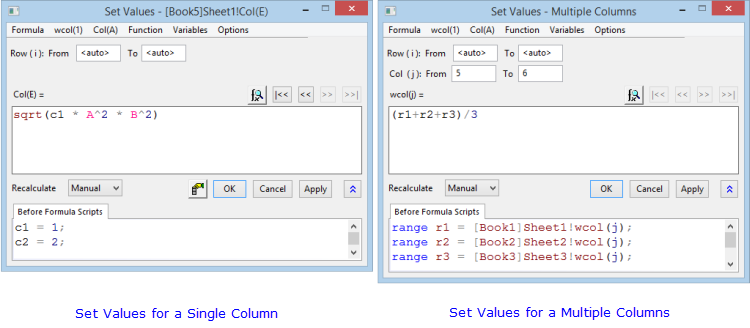
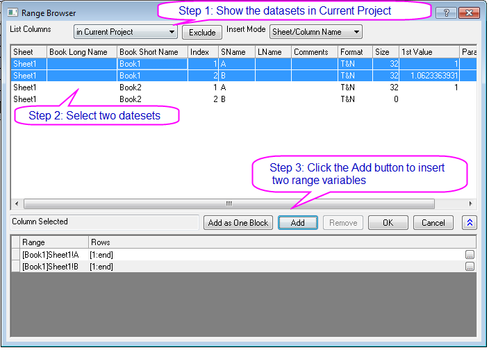
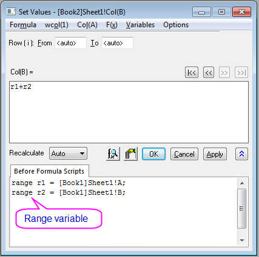
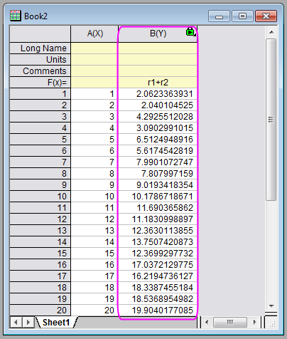
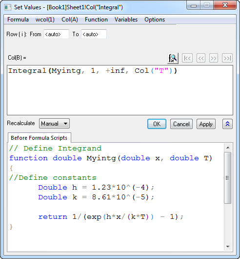
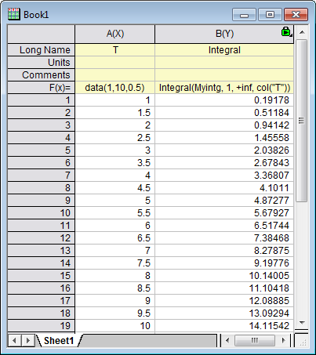

Ausdrücke in den Dialog Werte setzen eingeben
Wks-SetColVal-Expression
Grundlagen der Ausdrücke
Der im Dialog Werte setzen verwendete Ausdruck sollte der Logik von LabTalk folgen. Der Ausdruck kann arithmetische Operatoren, Bereichsvariablen, Standardfunktionen von LabTalk und benutzerdefinierte Funktionen etc. enthalten. Es gibt zwei Stellen, um Ausdrücke zu definieren:
- Spaltenformel Hier kann nur ein einzeiliger Ausdruck eingegeben werden.
- Skript vor Anwenden der Formel Hier können mehrzeilige LabTalk-Skripte eingegeben werden, die ausgeführt werden, bevor Matrixwerte mit der Formel im Bearbeitungsfeld Spaltenformel festgelegt werden.
Bitte beachten Sie, dass mehrere Beispiele für Sie zur Verfügung stehen. Um sie anzurufen, wählen Sie Formel: Beispiel laden aus.
- 
Nützliche Tipps für die Eingabe von Ausdrücken
Seit Origin 2017 SR0 ist die Vereinfachte Zellennotation (SCN) standardmäßig aktiviert. Wenn die vereinfachte Zellennotation SCN aktiviert ist, können Sie die neue Notation oder die Notation von vor 2017 verwenden, entweder im Feld Spaltenformel oder in der Spaltenbeschriftungszeile F(x)=. Beachten Sie jedoch, dass einige Einschränkungen gelten, wenn Sie die Funktionen col() oder wcol() verwenden, ein Skript in das Feld Skript vor Anwenden der Formel eingeben oder für Ihren Ausdruck Klammern "{}" verwenden.
- Wenn Sie sich auf eine Spalte mit ihrem Kurznamen beziehen, muss der Kurzname auf höchstens 3 Zeichen beschränkt sein. Andernfalls können solche Spaltenreferenzen nicht erkannt werden. Wenn Kurznamen 3 Zeichen überschreiten, verwenden Sie die alte Methode der Notation: (col() oder wcol()). Die Notation vor 2017 hat diese Eisnchränkung nicht.
- Seit Origin 2022b können Sie, wenn es mehrere Spalten mit dem gleichen Langnamen in einem Arbeitsblatt gibt, sowohl Kurz- als auch Langname verwenden, um die Spalte mit dem duplizierten Langnamen festzulegen. Die Syntax ist:
col(ShortName"LongName")
Falls der Kurzname ausgelassen wurde, wird auf die am weitesten links stehende Spalte mit diesem Langnamen verwiesen.
- Das Menü Variablen kann Ihnen bei der Definition von Variablen helfen, die in dem Ausdruck verwendet werden.
- Origin bietet viele Standardfunktionen über das Menü Funktion, die direkt im Ausdruck verwendet werden können. Der Dialog Funktion suchen und einfügen kann verwendet werden, um nach Standardfunktionen zu suchen.
- Sie können auch selbst eine benutzerdefinierte Funktion erstellen.
- Wenn Sie die neue vereinfachte Spaltennotation in einer Funktion mit Zeichenkettenparametern verwenden wie Token, sollten Sie doppelte Anführungszeichen statt einfachen verwenden.
- Die Buchstaben i und j sind Systemvariablen, die jeweils den aktuellen Zeilen- sowie Spaltenindex speichern. Wenn Sie die Spalten mit Zeilennummern oder Spaltenindexnummern füllen möchten, können Sie direkt i oder j in das Feld Spaltenformel eingeben.
- Bei der Verwendung von i und j in Ihrer Spaltenformel (oder in einer Zelle F(x)= ) müssen Sie Kleinbuchstaben verwenden, um einen Konflikt mit Spaltenkurznamen zu vermeiden.
- Sie können LabTalks Bedingungsoperator verwenden, um eine Spalte oder einen Bereich zu füllen. Sie können beispielsweise (wenn die 4. Spalte das Ziel ist) col(3)==1?col(1):col(2) in Formel eingeben, um entweder die Werte der ersten Spalte zu kopieren oder der zweiten Spalte entsprechend der Werte in der dritten Spalte.
- Die Schreibweise {} kann in der Spaltenformel verwendet werden, um die ausgewählten Spalte(n) mit einer Reihe von äquidistanten Zahlen zu füllen.
-
- {begin:step:end} füllt die ausgewählte(n) Spalte(n) mit Zahlen, wobei es bei beginn beginnt, bei end endet und mit step inkrementiert.
- {begin:end} füllt die ausgewählte(n) Spalte(n) mit Zahlen, wobei es bei beginn beginnt, bei end endet und mit 1 inkrementiert.
- Auf Daten aus anderen Mappen und Blättern können Sie über mehrere Wege zugreifen:
-
- Beim Festlegen der Werte für Col(i) können Sie eine Eingabe direkt in dem Ausdruck machen anstatt eine Gleichung wie "Col(i)= ..." in die Formel einzugeben.
- Ausdrücke enthalten eine Syntaxfarbgebung: LabTalk-Funktionen sind Wein, Spaltenkurznamen sind Rot und LabTalk-Variablen sind Marine.
Ausdrücke nur in Spaltenformel eingeben
Sie können einen einzeiligen Ausdruck im Bearbeitungsfeld Spaltenformel eingeben und das Feld Skript vor Anwenden der Formel leer lassen. Der Ausdruck im Bearbeitungsfeld Spaltenformel kann Standardfunktionen und benutzerdefinierte Funktionen beinhalten. Die folgenden Beispiele zeigen, wie Sie diese Funktionen verwenden können.
Beispiel 1:
- Öffnen Sie eine neue Arbeitsmappe.
- Markieren Sie Spalte A. Klicken Sie mit der rechten Maustaste und wählen Sie Spalten füllen mit: Zeilennummern.
- Markieren Sie Spalte B, klicken Sie mit der rechten Maustaste darauf und wählen Sie Spaltenwerte berechnen im Kontextmenü aus, um den Dialog Werte setzen zu öffnen. Wählen Sie Funktion: Trigonometric/Hyperbolic: Cos(x), um cos(x) zum Bearbeitungsfeld der Spaltenformel hinzuzufügen. Markieren Sie die Variable "x" in der Formel und wählen Sie im Menü Werte setzen Col(A): Col(A). Der Ausdruck lautet nun cos(A). Klicken Sie auf OK, und die Spalte wird mit Werten gefüllt, die durch Verwenden des Kosinus von jedem Wert der Spalte A berechnet wurden.
Ausdrücke nur in Skript vor Anwenden der Formel eingeben
Sie können mehrzeilige LabTalk-Skripts im Bearbeitungsfeld Skript vor Anwenden der Formel eingeben und das der Formel leer lassen. Zusätzlich zu den Standardfunktionen und benutzerdefinierten Funktionen werden hier auch alle anderen LabTalk-Skripts unterstützt. Sie können also Bereichsvariablen, Zeichenkettenvariablen, Schleifen und X-Funktionen mit Zugriff auf LabTalk verwenden.
Das folgende Beispiel erhält die gleichen Ergebnisse wie Beispiel 1.
Beispiel 2:
- Öffnen Sie eine neue Arbeitsmappe.
- Markieren Sie die Spalte A und klicken Sie mit der rechten Maustaste auf sie, um Spalten füllen mit: Zeilennummern auszuwählen.
- Markieren Sie Spalte B, klicken Sie mit der rechten Maustaste darauf und wählen Sie Spaltenwerte berechnen im Kontextmenü aus, um den Dialog Werte setzen zu öffnen.
- Geben Sie Col(B)=cos(Col(A)) in Skript vor Anwenden der Formel ein und klicken Sie auf OK, um die Daten zu erzeugen.
Das folgende Beispiel lädt einen Beispielausdruck, der mehrzeilige Skripts zum Normieren von Daten enthält.
Beispiel 3
- Öffnen Sie eine neue Arbeitsmappe.
- Markieren Sie Spalte A. Klicken Sie mit der rechten Maustaste auf sie und wählen Sie Spalten füllen mit: Zeilennummern im Kontextmenü.
- Klicken Sie mit der rechten Maustaste erneut auf Spalte A und wählen Sie Werte der Matrix setzen im Kontextmenü, um den Dialog Werte setzen zu öffnen.
- Wählen Sie Formel: Sample laden: Normalize column to (0, 1) im Menü des Dialogs Werte setzen, um Skripte in das Feld Skripte vor Anwenden der Formel zu laden. Klicken Sie dann auf die Schaltfläche OK, um die Daten zu normieren.
|
Hinweis: Jede Zeile des LabTalk-Skripts im Feld Skript vor Anwenden der Formel sollte mit einem Semikolon beendet werden.
|
Beispiel 4
- Öffnen Sie eine neue Arbeitsmappe.
- Klicken Sie auf die Schaltfläche des Importassistenten
 , um den Dialog zu öffnen.
, um den Dialog zu öffnen.
- Wählen Sie unter Datenquelle die Datei \Samples\Graphing\Waterfall.dat. Klicken Sie auf Fertigstellen, um die Datei zu importieren.
- Aktivieren Sie das Arbeitsblatt und klicken Sie auf die Schaltfläche Neue Spalten anhängen
 . Scrollen Sie zum Ende des Arbeitsblatts und achten Sie auf Spalte DW(Y).
. Scrollen Sie zum Ende des Arbeitsblatts und achten Sie auf Spalte DW(Y).
- Markieren Sie diese Spalte DW(Y) und wählen Sie Spaltenwerte errechnen im Kontextmenü, um den Dialog Werte setzen zu öffnen.
- Geben Sie folgendes Skript in das Feld Skript vor Anwenden der Formel ein.
-
range r1 = col(DW); // Set range variable to the added column r1 = wcol(2); // Set initial value of the range int nc = wks.ncols; // Retrieve the total number of the columns // Loop over all y columns to sum them up for(page.v1=3; page.v1<= nc-1 ; page.v1+=1) { range rY = wcol(page.v1); r1 += rY; } r1 = r1/(nc-2); // Calculate the average of y columns
- Klicken Sie auf OK, um die Einstellungen anzuwenden. Das Mittel aller Y-Spalten wird berechnet und in die Spalte DW(Y) eingegeben.
Ausdrücke in Spaltenformel und Skript vor Anwenden der Formel eingeben
Häufig sind Skripte in beiden Feldern erforderlich, Spaltenformel und Skript vor Anwenden der Formel. Sie können beispielsweise Bereichsvariablen Skripts vor Anwenden der Formel definieren und sie dann in Spaltenformel verwenden.
Beispiel 5:
- Erstellen Sie ein neues Projekt. Eine neue Arbeitsmappe mit dem Namen "Book1" sollte entstanden sein.
- Markieren Sie Spalte A. Klicken Sie mit der rechten Maustaste und wählen Sie Spalte füllen mit: Zeilennummern im Kontextmenü.
- Markieren Sie Spalte B. Klicken Sie mit der rechten Maustaste und wählen Sie Spalte füllen mit: Gleichverteilte Zufallszahlen im Kontextmenü.
- Erstellen Sie eine weitere Arbeitsmappe mit dem Namen "Book2".
- Markieren Sie Spalte A in Book2. Klicken Sie mit der rechten Maustaste und wählen Sie Spalte füllen mit: Zeilennummern.
- Markieren Sie Spalte B in dieser Arbeitsmappe. Klicken Sie mit der rechten Maustaste auf sie und wählen Sie Spaltenwerte errechnen im Kontextmenü, um den Dialog Werte setzen zu öffnen.
- Jetzt fügen wir zwei Bereichsvariablen ein, die auf die Spalten in Book1 verweisen. Wählen Sie Variablen: Bereichsvariable hinzufügen im Menü des Dialogs Werte setzen. Der Bereichsbrowser wird angezeigt. Wählen Sie zwei Bereiche im Dialog, wie im folgenden Screenshot zu sehen (stellen Sie sicher, dass Listenspalte auf in aktuellem Projekt gesetzt ist):
-
- 
- Klicken Sie auf OK, um zum Dialog Werte setzen zurückzukehren.
- Geben Sie r1+r2 in Formel ein. Der Dialog Werte setzen sollte folgendermaßen aussehen:
-
- 
- Klicken Sie auf die Schaltfläche OK, um Daten für Spalte B zu erzeugen. Jedes Element in Spalte B sollte die Summe der Elemente in der entsprechenden Zeile in Book1 sein.
-
- 
Beispiel 6:
Dies ist ein Beispiel, mit dem gezeigt wird, wie das Integral bei jedem gegebenen t-Wert mit Hilfe der Integralfunktion und der benutzerdefinierten Funktion berechnet wird.
- Erstellen Sie eine neue Arbeitsmappe.
- Legen Sie Spalte A Langname als T fest und die Formel für Spalte A mit Hilfe der Formel unten:
data(1,10,0.5)
- Legen Sie Spalte B Langname als Integral fest, markieren Sie Spalte B und klicken Sie mit der rechten Maustaste und wählen Sie Spaltenwerte errechnen, um den Dialog zu öffnen.
- Geben Sie die Integrandfunktion in das Feld Skript vor Anwenden der Formel und den Integralausdruck im Bearbeitungsfeld Col(B)= ein, wie unten gezeigt:
-
- 
- Klicken Sie auf OK, um die Einstellungen anzuwenden. Das berechnete Integral wird unten angezeigt:
-
- 
Das Skript vor Anwenden der Formel wird auch unten zur Verfügung gestellt:
// Define Integrand function double Myintg(double x, double T) { //Define constants Double h = 1.23*10^(-4); Double k = 8.61*10^(-5); return 1/(exp(h*x/(k*T)) - 1); }